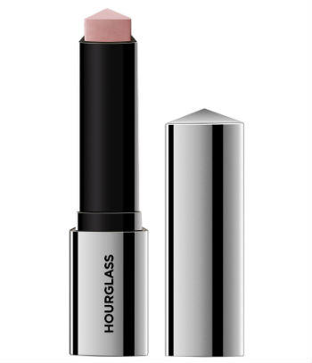

Iluminador Stick

Según cuenta Chanel, «Lo más importante a la hora de decidir qué tipo de iluminador usar, es el efecto que se quiere conseguir. Para conseguir un acabado húmedo
y más brillante, la mejor apuesta es una fórmula en crema. Vanish Flash Stick de Hourglass al ser un iluminador crema en barra es extremadamente fácil de usar, ya que puede
aplicarse con los dedos o con brocha».
Una inyección de luminosidad instantánea y satinada sobre la piel en cinco tonos radiantes para un brillo único. «Los resultados son inmediatos, cobertura perfecta y luminosidad
de larga duración, todo ello en una barra nómada y elegante para una inyección de luminosidad instantánea allá donde vayas», asegura Chanel. Su formato de barra triangular único ofrece una aplicación precisa.
A su vez, los diferentes tonos pueden superponerse para obtener tonos y looks personalizados.